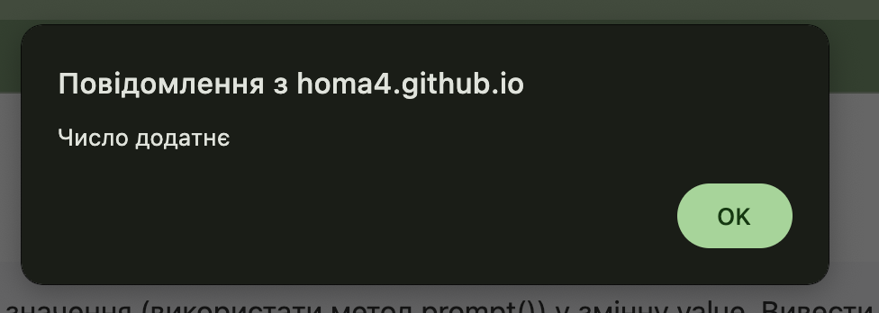
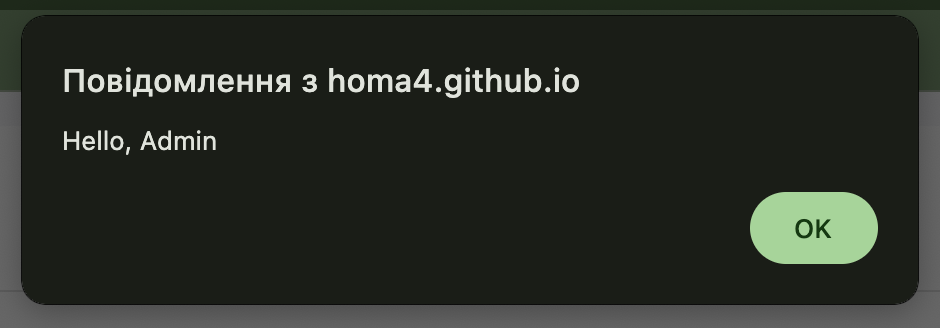
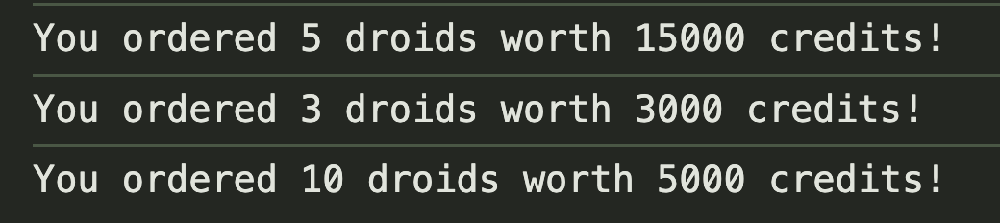
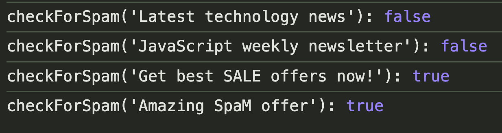
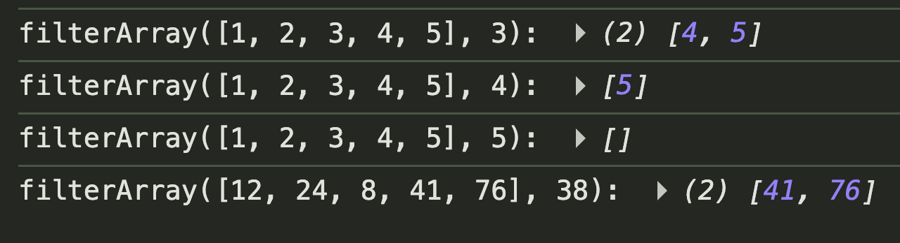
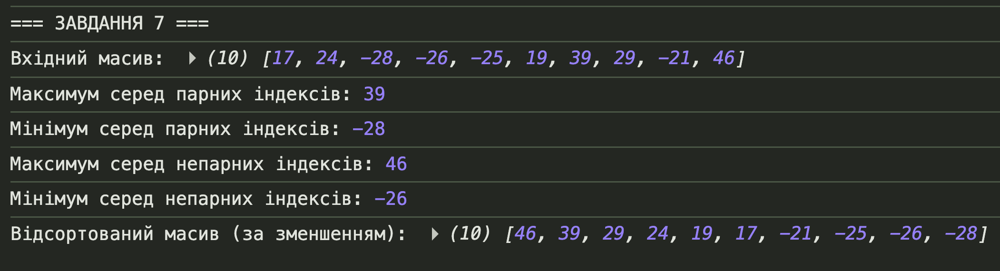
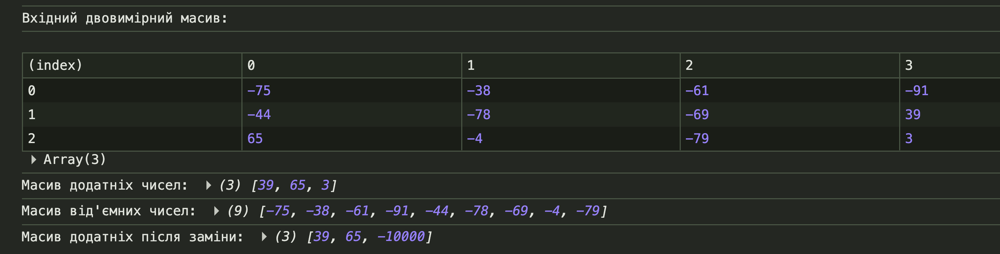

Тема лабораторної роботи №4
Тема:
Основи мови JavaScript. Умовні оператори, функції, масиви. Робота з подіями, таймерами та елементами веб-сторінки.
Мета лабораторної роботи:
Придбати практичні навички написання скриптів мовою JavaScript: використання умов, функцій, циклів, масивів, обробки подій та створення інтерактивних елементів веб-сторінки.
Місце розташування звітних матеріалів:
HTML-звітного документу (цей документ), власного WEB-застосунку та репозиторію із вихідними файлами. Посилання наведені в наступних пунктах меню.
Посилання на репозиторії
- Репозиторій власного WEB-застосунку: https://github.com/Homa4/lab4
- Репозиторій звітного HTML-документу: https://github.com/Homa4/IM-33_-appRECORD-NabokaTimur-FIOT-2025
Посилання на живі сторінки
- Жива сторінка власного WEB-застосунку: https://homa4.github.io/lab4/
- Жива сторінка звітного HTML-документу: https://homa4.github.io/IM-33_-appRECORD-NabokaTimur-FIOT-2025/
Завдання №1
Умова:
Збережіть введене значення (використати метод prompt()) у змінну
value. Вивести це значення у Console, використовуючи
шаблонний рядок. Перевірити: введене значення відʼємне, додатнє
чи дорівнює нулю. Відповідь вивести за допомогою alert().
Код завдання:
function task1() {
let value = prompt("Введіть число:");
console.log(`Введене значення: ${value}`);
let num = Number(value);
if (isNaN(num)) {
alert("Це не число!");
} else if (num > 0) {
alert("Число додатнє");
} else if (num < 0) {
alert("Число від'ємне");
} else {
alert("Число дорівнює нулю");
}
}Результат виконання:

Завдання №2
Умова:
Змінна number може набувати значення '1', '2', '3'
або '4'. Якщо вона має значення '1', то у змінну result
записати 'зима', якщо '2' – 'весна' і так далі. Розвʼязати
завдання за допомогою switch...case.
Код завдання:
function task2() {
let number = prompt("Введіть номер пори року (1-4):");
let result;
switch (number) {
case "1":
result = "зима";
break;
case "2":
result = "весна";
break;
case "3":
result = "літо";
break;
case "4":
result = "осінь";
break;
default:
result = "Невірне значення! Введіть число від 1 до 4";
}
console.log(`Результат: ${result}`);
alert(result);
}Результат виконання:

Завдання №3
Умова:
Є користувачі Admin та User
з відповідними паролями. Написати програмний код, який
запитує у користувача логін і пароль та виводить результат
авторизації.
Код завдання:
function task3() {
const Admin = { login: "Admin", password: "admin123" };
const User = { login: "User", password: "user456" };
let login = prompt("Введіть логін:");
console.log(`Введений логін: ${login}`);
if (login === null || login === "") {
alert("Cancelled");
} else if (login === Admin.login) {
let pass = prompt("Введіть пароль для Admin:");
if (pass === Admin.password) {
alert("Hello, Admin");
} else {
alert("Невірний пароль");
}
} else if (login === User.login) {
let pass = prompt("Введіть пароль для User:");
if (pass === User.password) {
alert("Hello, User");
} else {
alert("Невірний пароль");
}
} else {
alert("I don't know you");
}
}Результат виконання:

Завдання №4
Умова:
Станція з продажу ремонтних дроїдів. Оголосити функцію
makeTransaction, яка за кількістю дроїдів та ціною
за одиницю повертає рядок із інформацією про замовлення.
Код завдання:
function makeTransaction(quantity, pricePerDroid) {
const totalPrice = quantity * pricePerDroid;
return `You ordered ${quantity} droids worth ${totalPrice} credits!`;
}
function task4() {
console.log(makeTransaction(5, 3000));
console.log(makeTransaction(3, 1000));
console.log(makeTransaction(10, 500));
alert("Результати виведено в консоль (F12)");
}Результат виконання:

Завдання №5
Умова:
Реалізувати функцію checkForSpam(message), яка
перевіряє рядок на наявність підрядків "spam" або "sale"
(без урахування регістру).
Код завдання:
function checkForSpam(message) {
const lowerMessage = message.toLowerCase();
return lowerMessage.includes("spam") || lowerMessage.includes("sale");
}
function task5() {
console.log(
"checkForSpam('Latest technology news'):",
checkForSpam("Latest technology news")
);
console.log(
"checkForSpam('JavaScript weekly newsletter'):",
checkForSpam("JavaScript weekly newsletter")
);
console.log(
"checkForSpam('Get best SALE offers now!'):",
checkForSpam("Get best SALE offers now!")
);
console.log(
"checkForSpam('Amazing SpaM offer'):",
checkForSpam("Amazing SpaM offer")
);
alert("Результати виведено в консоль (F12)");
}Результат виконання:

Завдання №6
Умова:
Функція filterArray(numbers, value) повертає масив
чисел, більших за задане значення value.
Код завдання:
function filterArray(numbers, value) {
const result = [];
for (let i = 0; i < numbers.length; i++) {
if (numbers[i] > value) {
result.push(numbers[i]);
}
}
return result;
}
function task6() {
console.log(
"filterArray([1, 2, 3, 4, 5], 3):",
filterArray([1, 2, 3, 4, 5], 3)
);
console.log(
"filterArray([1, 2, 3, 4, 5], 4):",
filterArray([1, 2, 3, 4, 5], 4)
);
console.log(
"filterArray([1, 2, 3, 4, 5], 5):",
filterArray([1, 2, 3, 4, 5], 5)
);
console.log(
"filterArray([12, 24, 8, 41, 76], 38):",
filterArray([12, 24, 8, 41, 76], 38)
);
alert("Результати виведено в консоль (F12)");
}Результат виконання:

Завдання №7 (варіант 5)
Умова:
1) Визначити максимальне та мінімальне значення серед елементів з
парними та непарними індексами одновимірного масиву.
2) Виконати сортування масиву методом вибору за спаданням.
Код завдання:
function findMinMaxByIndex(arr) {
let evenIndexMax = -Infinity,
evenIndexMin = Infinity;
let oddIndexMax = -Infinity,
oddIndexMin = Infinity;
for (let i = 0; i < arr.length; i++) {
if (i % 2 === 0) {
if (arr[i] > evenIndexMax) evenIndexMax = arr[i];
if (arr[i] < evenIndexMin) evenIndexMin = arr[i];
} else {
if (arr[i] > oddIndexMax) oddIndexMax = arr[i];
if (arr[i] < oddIndexMin) oddIndexMin = arr[i];
}
}
return { evenIndexMax, evenIndexMin, oddIndexMax, oddIndexMin };
}
function selectionSortDescending(arr) {
const result = [...arr];
for (let i = 0; i < result.length - 1; i++) {
let maxIdx = i;
for (let j = i + 1; j < result.length; j++) {
if (result[j] > result[maxIdx]) {
maxIdx = j;
}
}
if (maxIdx !== i) {
[result[i], result[maxIdx]] = [result[maxIdx], result[i]];
}
}
return result;
}
function task7() {
const size = Number(prompt("Введіть кількість елементів масиву:"));
const arr = [];
for (let i = 0; i < size; i++) {
arr.push(Math.floor(Math.random() * 100) - 50);
}
console.log("=== ЗАВДАННЯ 7 ===");
console.log("Вхідний масив:", arr);
const stats = findMinMaxByIndex(arr);
console.log("Максимум серед парних індексів:", stats.evenIndexMax);
console.log("Мінімум серед парних індексів:", stats.evenIndexMin);
console.log("Максимум серед непарних індексів:", stats.oddIndexMax);
console.log("Мінімум серед непарних індексів:", stats.oddIndexMin);
const sorted = selectionSortDescending(arr);
console.log("Відсортований масив (за зменшенням):", sorted);
alert("Результати виведено в консоль (F12)");
}Результат виконання:

Завдання №8
Умова:
Є двовимірний масив цілих чисел. Сформувати окремі масиви додатніх та відʼємних елементів. Якщо додатних елементів не менше трьох – замінити третій елемент введеним користувачем відʼємним числом.
Код завдання:
function task8() {
const rows = 3,
cols = 4;
const matrix = [];
for (let i = 0; i < rows; i++) {
matrix[i] = [];
for (let j = 0; j < cols; j++) {
matrix[i][j] = Math.floor(Math.random() * 201) - 100;
}
}
console.log("=== ЗАВДАННЯ 8 ===");
console.log("Вхідний двовимірний масив:");
console.table(matrix);
const positive = [];
const negative = [];
for (let i = 0; i < rows; i++) {
for (let j = 0; j < cols; j++) {
if (matrix[i][j] > 0) {
positive.push(matrix[i][j]);
} else if (matrix[i][j] < 0) {
negative.push(matrix[i][j]);
}
}
}
console.log("Масив додатніх чисел:", positive);
console.log("Масив від'ємних чисел:", negative);
if (positive.length >= 3) {
const newValue = prompt(
"Введіть від'ємне значення для заміни третього елемента:"
);
const num = Number(newValue);
if (num < 0) {
positive[2] = num;
console.log("Масив додатніх після заміни:", positive);
alert("Заміна виконана! Дивіться консоль (F12)");
} else {
alert("Потрібно ввести від'ємне число!");
}
} else {
alert("У масиві додатніх менше 3 елементів!");
}
}Результат виконання:

Завдання №9 (варіант 5) — слайд-шоу
Умова:
Реалізувати слайд-шоу з таймером, можливістю зміни інтервалу показу, налаштуванням розміру слайда та циклічністю відтворення.
Код завдання:
let currentSlide = 0;
const totalSlides = 5;
let slideshowInterval = null;
const colors = [
"linear-gradient(135deg, #667eea 0%, #764ba2 100%)",
"linear-gradient(135deg, #f093fb 0%, #f5576c 100%)",
"linear-gradient(135deg, #4facfe 0%, #00f2fe 100%)",
"linear-gradient(135deg, #43e97b 0%, #38f9d7 100%)",
"linear-gradient(135deg, #fa709a 0%, #fee140 100%)",
];
function updateSlide() {
const slideContent = document.getElementById("slide-content");
const slideCounter = document.getElementById("slide-counter");
slideContent.style.background = colors[currentSlide];
slideContent.textContent = currentSlide + 1;
slideCounter.textContent = `Слайд ${currentSlide + 1} з ${totalSlides}`;
}
function nextSlide() {
const loop = document.getElementById("loop").checked;
if (currentSlide < totalSlides - 1) {
currentSlide++;
} else if (loop) {
currentSlide = 0;
} else {
stopSlideshow();
return;
}
updateSlide();
}
function prevSlide() {
if (currentSlide > 0) {
currentSlide--;
} else {
currentSlide = totalSlides - 1;
}
updateSlide();
}
function startSlideshow() {
if (slideshowInterval) return;
const interval = Number(document.getElementById("interval").value);
slideshowInterval = setInterval(nextSlide, interval);
alert("Слайд-шоу запущено!");
}
function stopSlideshow() {
if (slideshowInterval) {
clearInterval(slideshowInterval);
slideshowInterval = null;
alert("Слайд-шоу зупинено!");
}
}
function updateSizeDisplay() {
const size = document.getElementById("size").value;
const slideContent = document.getElementById("slide-content");
slideContent.style.width = size + "px";
slideContent.style.height = size * 0.75 + "px";
document.getElementById("size-value").textContent = size + "px";
}
document.addEventListener("DOMContentLoaded", function () {
updateSlide();
});Результат виконання:

Висновки
У ході виконання лабораторної роботи №4 було закріплено навички програмування мовою JavaScript: використання умовних операторів, функцій, роботи з масивами, обробки подій та таймерів. Також реалізовано декілька практичних задач, включаючи роботу з двовимірними масивами та створення інтерактивного слайд-шоу.